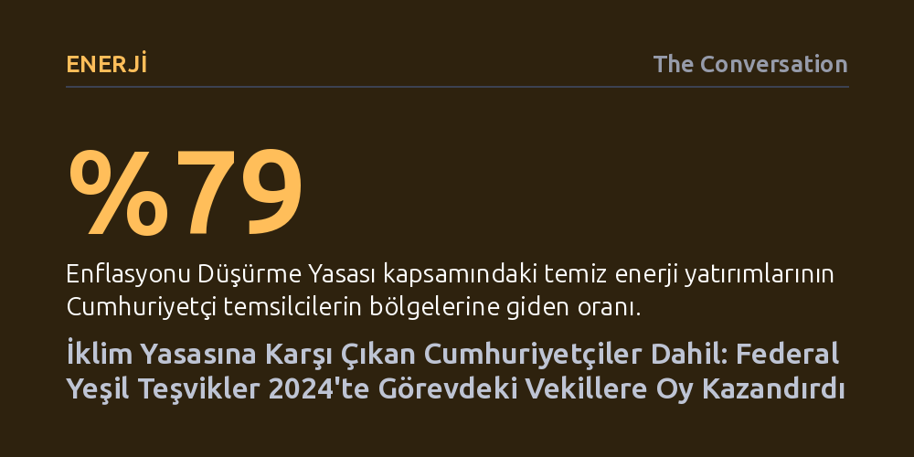

ENERJI · The Conversation · 2026-10-20
ABD'de Enflasyonu Düşürme Yasası kapsamındaki temiz enerji yatırımları, aleyhte oy veren Cumhuriyetçiler dahil görevdeki Kongre üyelerinin 2024 seçimlerindeki oy oranlarını artırdı. Bir seçim bölgesine giden federal kaynağın ikiye katlanması, vekilin oy payına yaklaşık 0,9 puanlık artış olarak yansıdı.
İklim politikalarındaki sert kutuplaşmaya rağmen, seçmenlerin parti ideolojisinden ziyade bölgelerine giren doğrudan yeşil yatırımları sandıkta ödüllendirdiğini gösteriyor.

2022 yılında ABD Kongresi’nden geçen Enflasyonu Düşürme Yasası (IRA), tek bir Cumhuriyetçi üyenin dahi desteğini alamamış, Senato’daki eşitlik ancak Başkan Yardımcısı Kamala Harris’in oyu ile bozulabilmişti. İklim değişikliğiyle mücadele ve sera gazı emisyonlarını azaltma amacıyla hazırlanan yasa, yeni vergiler koymak yerine elektrikli araçlardan ticari binaların enerji verimliliğine kadar pek çok sektöre 370 milyar dolarlık devasa sübvansiyon ve vergi indirimi öngörüyordu.
İronik olan şu ki, yasanın sağladığı temiz enerji yatırımlarının yaklaşık yüzde 79'u, tasarıya blok halinde karşı çıkan Cumhuriyetçilerin temsil ettiği seçim bölgelerine aktı. Geniş arazilere ve kırsal alanlara sahip bu bölgeler; rüzgâr enerjisi santralleri, batarya fabrikaları ve elektrikli araç üretim tesisleri gibi büyük ölçekli sanayi yatırımları için coğrafi açıdan en elverişli yerlerdi. Ulusal düzeyde yeşil politikalara sert biçimde direnen muhafazakâr siyasetçiler, yerel ekonomiyi canlandıran ve istihdam yaratan bu yatırımları kendi seçim çevrelerinde memnuniyetle karşıladı.
Araştırmacıların 2024 Kongre seçim sonuçları üzerinde yürüttüğü ekonometrik analiz, Enflasyonu Düşürme Yasası kaynaklı fonların her iki partiden görevdeki Temsilciler Meclisi üyelerine sandıkta somut bir avantaj sağladığını ortaya koyuyor. Yapılan istatistiksel modellemede; bölgelerdeki Trump desteği, vekillerin 2022'deki oy tabanı, kampanya harcamaları ve demografik yapı gibi seçim sonucuna etki edebilecek diğer tüm değişkenler kontrol altında tutuldu.
Elde edilen bulgu oldukça net: Bir seçim bölgesine aktarılan federal temiz enerji yatırımı ikiye katlandığında, görevdeki temsilcinin 2024'teki oy payı 2022'ye kıyasla yaklaşık 0,9 yüzde puan artış gösterdi. Örneğin yaklaşık 2 milyar dolarlık fon çeken Michigan 5. Bölge’de Cumhuriyetçi Tim Walberg oylarını yüzde 62’den 65,7’ye çıkarırken, 588 milyon dolarlık pay alan Mississippi 2. Bölge’de Demokrat Bennie Thompson oy oranını yüzde 60’tan 61,8’e yükseltti. Seçmenlerin fonun ideolojik etiketine değil, bölgeye giren kaynağa baktığı görüldü.
Araştırmanın en çarpıcı bulgularından biri, 2022 ile 2024 yılları arasında ilgili seçim çevrelerinde hissedilir bir makroekonomik iyileşme tespit edilememiş olması. Milyarlarca dolarlık batarya veya elektrikli araç tesislerinin inşası uzun yıllar aldığı için, yatırımların yerel refah üzerindeki fiili ekonomik etkisi henüz tam anlamıyla olgunlaşmamıştı.
Buna rağmen oyların artması, siyaset biliminde 'başarı sahiplenmesi' (credit claiming) olarak adlandırılan stratejiyle açıklanıyor. Seçim kampanyası boyunca Demokratlar yatırımları doğrudan Enflasyonu Düşürme Yasası'na atıfla savunurken, Cumhuriyetçi vekiller yasanın adını anmadan aynı projeleri 'ekonomik kalkınma fırsatları' söylemiyle seçmene sundu. Seçmenlerin henüz tamamlanmamış tesislerin vaat ettiği istihdam ve canlılık ihtimaline dahi sandıkta olumlu yanıt verdiği anlaşıldı.
2025 yılında Donald Trump’ın göreve gelmesi ve Cumhuriyetçilerin Kongre çoğunluğunu korumasıyla birlikte, Enflasyonu Düşürme Yasası'nın iklim hükümleri hedef tahtasına oturtuldu. Geniş kapsamlı bütçe ve vergi düzenlemeleriyle enerji verimliliği ve elektrikli araç vergi indirimleri budanırken, federal arazilerde fosil yakıt üretiminin artırılmasına hız verildi. Bu durum, partizan ideolojinin yerel temsilcilerin doğrudan çıkarlarını dahi baskılayabildiğini gösterdi.
Ancak yerel ekonomik kazanımların yarattığı cazibe büsbütün silinmiş değil. Kendi bölgelerinde milyarlarca dolarlık batarya veya rüzgâr projeleri yükselen çok sayıda Cumhuriyetçi Kongre üyesi, devam eden yatırımların ve istihdamın riske atılmaması için temiz enerji teşviklerinin korunması yönünde parti yönetimine açıkça çağrıda bulundu. İklim krizine dönük ulusal kutuplaşma aşılamasa bile, yeşil sanayi yatırımlarının yarattığı ekonomik çıkarın partiler üstü bir siyasi kalkan oluşturduğu görülüyor.